Puedes acceder a este santuario desde que llegas a la región de la torre de Picos Gemelos. Lo encuentras en el camino que se dirige a los Picos Gemelos antes de cruzar el Puente de Venno.
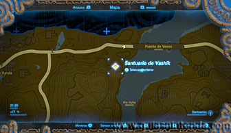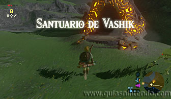
En este santuario debes avanzar usando las corrientes de aire que lo recorren. Sube por las escaleras de la izquierda y salta justo delante de la corriente. Nada más saltar saca la paravela y así podrás planear para llegar al otro extremo de la sala, donde se encuentra el cofre del tesoro (con un Ámbar).
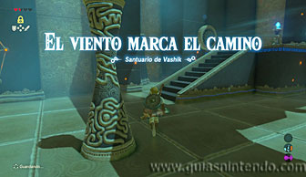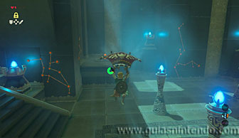
Después baja de la plataforma a la que has llegado y ve por las escaleras del centro de la sala, gira ala izquierda y usa la corriente de aire del mismo modo que la vez anterior.
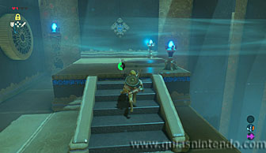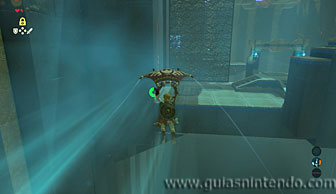
Llegas a otras escaleras donde se encuentra la corriente de aire que te lleva al final del recorrido. Solo debes repetir la misma operación, solo que debes pulsar el botón B en cuanto estés encima de la plataforma de destino, para guardar la paravela y caer. Si no lo haces puedes pasarte de largo y caer al vacío.
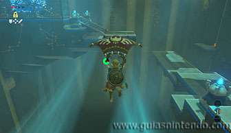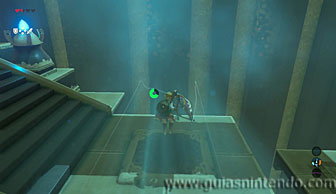
Hay otro cofre más abajo en la pared derecha, la única forma de cogerlo es usar la misma corriente de aire que usas para llegar al final del santuario, solo que en vez de pulsar el botón B para guardar la paravela, tienes que girar a la derecha cuando estés sobre la plataforma. Así podrás girar y llegar a ese cofre que contiene un mandoble de soldado.
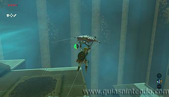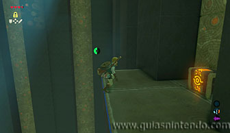
Cuando llegues al altar del santuario podrás examinarlo para obtener un símbolo de valía.
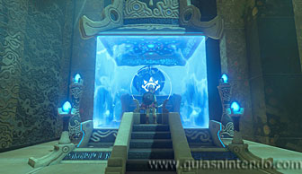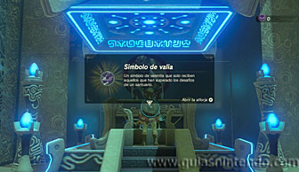